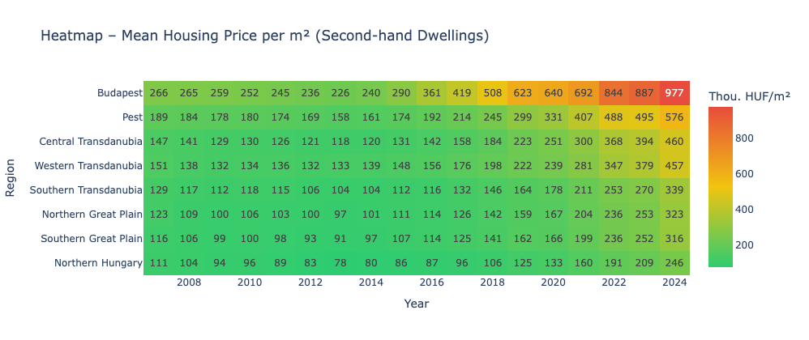

For young people today, it constantly feels like living is becoming less and less affordable. We investigate this phenomenon — focusing on one of the hottest topics right now: housing prices. We briefly examine changes across all of Europe, then zoom into the country where the shift has been most dramatic. We always hear that things were better before. But was that really the case?
Housing prices have surged across Europe since the COVID-19 pandemic — but not equally. The map below shows how the Housing Price Index (HPI) evolved country by country from 2015 to 2024, indexed to 2015 levels. Brighter, warmer colours indicate steeper cumulative growth.
One country stands out immediately: Hungary, blazing red in the east, has experienced by far the sharpest increase on the continent — more than doubling its HPI within a decade. This makes it the natural focus for the rest of our investigation.
Which country has seen the sharpest increase in housing prices since 2015?
Hungary leads Europe by a wide margin. By 2024, prices had more than doubled compared to 2015 — outpacing even fast-growing markets like Estonia and Czechia.
Western Europe shows moderate growth; Germany and Scandinavia actually cooled post-2022 as interest rates rose. Hungary's trajectory is in a category of its own.
Having established that Hungary leads Europe, we now zoom in. The animated map below shows mean second-hand dwelling prices per square metre (in thousand HUF) across Hungary's statistical regions from 2007 to 2024, using data from the Hungarian Central Statistical Office (KSH, table 18.1.2.9).
Each bubble is placed at the city's geographic coordinates. Both size and colour encode the same variable — price per m² — but serve complementary roles: size gives an intuitive at-a-glance sense of magnitude, while the green → yellow → red colour scale enables precise cross-location comparison even when bubbles overlap. Using both avoids the ambiguity that arises from relying on either alone.
Use the year slider to scrub through time, or press Play to animate the full sequence and observe both the overall price surge after 2015 and the widening gap between Budapest and the rest of the country.
Is the price surge uniform across Hungary, or is it concentrated in specific regions?
The surge is heavily Budapest-led. The capital's bubble dwarfs all others by 2024, having grown far faster than county seats or regional towns. The geographic divide has widened dramatically since 2015.
Western Transdanubian cities (e.g. Győr) show the next-strongest growth — driven by industrial investment and proximity to Austria.
The animated map captures change over time; this section provides a complementary static summary — a heatmap of average dwelling prices per square metre across Hungary's regions for the most recent available year. Where the animation shows trajectory, this view enables direct comparison across all regions simultaneously.
Warmer colours (red/orange) indicate higher prices. The contrast between Budapest and peripheral regions — particularly in the north-east — is stark.

Each cell's colour encodes the average price per m² for that region. Darker red = more expensive. Compare rows to see the regional hierarchy at a glance.
Budapest and the Pest agglomeration are dramatically more expensive than anywhere else. The north-eastern regions (Northern Hungary, Northern Great Plain) remain the most affordable — but have also seen significant recent rises.
The geographic concentration of high prices mirrors the concentration of economic opportunity — raising serious questions about long-term accessibility for people outside the capital.
Rising prices only tell half the story. What matters for affordability is how prices move relative to wages. The chart below compares three series, all indexed to 2007 = 100:
Nominal wage index — the raw, inflation-unadjusted growth in average wages. Real income per capita — wages adjusted for inflation, reflecting actual purchasing power. National average housing price index — how much a typical dwelling costs, relative to 2007.
The gap between the red line and the green/grey lines is the affordability squeeze: every percentage point by which housing outpaces real income means buyers need to work proportionally more years to save for the same home.
Have wages kept pace with housing price growth in Hungary?
No. Housing prices have grown significantly faster than both nominal and real incomes — particularly since 2015. By 2024, housing is roughly 2× more expensive relative to income than it was in 2007.
The shaded gap between the two income lines shows how much of Hungary's wage growth has been eroded by inflation — especially during the 2022–2023 inflation spike, when real incomes actually fell.
Even nominal wages — the most flattering measure — fail to keep pace with housing prices after 2015, when the CSOK subsidy programme supercharged demand.
The final visualisation brings wages and prices together into a single, intuitive metric: the affordability ratio — defined as the number of gross annual wages required to purchase an average-sized dwelling in a given region and year.
This heatmap shows how that ratio has evolved across Hungary's regions from 2007 to 2024. Redder cells mean a home costs more years of local wages; greener cells mean it is relatively accessible. Reading down a column shows the regional hierarchy in any given year; reading across a row shows how a region has become more or less affordable over time.
Affordability ratio = (price/m² × reference m²) ÷ gross annual wage
For each region and year: the average price per m² (from KSH) is multiplied by a
reference apartment size (typically 55–60 m², representative of a
standard starter home). This gives the nominal cost of a typical dwelling.
That figure is then divided by the regional gross annual average wage
(also from KSH). The result is the number of full annual salaries needed to purchase
the home outright — a standard international affordability benchmark.
Budapest's affordability ratio has worsened dramatically — rising from roughly 5–6 years of wages in 2007 to over 12 years by 2024. Even regional cities have seen the ratio double, making ownership increasingly out of reach for average earners.
A ratio above 8–10 years is considered "severely unaffordable" by international standards (Demographia). Budapest now exceeds this threshold by a wide margin.
The affordability ratio used here follows the standard price-to-income (PTI) methodology. The formula is:
PTI = (avg_price_per_m² × reference_apt_size_m²) ÷ gross_annual_avg_wage
Reference apartment size was set at 55 m² — broadly representative of a median first-time purchase in Hungary. Regional gross annual wages were sourced from KSH and matched to the corresponding regional price series. Where regional wage data was unavailable for early years, national average wages were used as a proxy.
Note that this metric uses gross wages and does not account for mortgage financing, deposit requirements, or tax deductions — it should therefore be read as a relative indicator of structural affordability trends rather than an absolute measure of what buyers actually pay month-to-month.
The data leaves little room for doubt: housing has become significantly less affordable in Hungary — and it is not simply a feeling. Prices have risen faster than wages for nearly a decade, and the gap between what an average earner earns and what a home costs has roughly doubled since 2007.
All in all, we can clearly see that life does indeed become less and less affordable — especially in the capital region, where most of the economic opportunities are centred. Budapest's affordability ratio now places it in the "severely unaffordable" category by international standards, while provincial cities, though cheaper, have followed the same trajectory.
State demand subsidies like CSOK accelerated price growth without addressing the supply side. Inflation in 2022–2023 added a further squeeze on real incomes. The result is a generation facing structural barriers to ownership that their parents did not — not because they spend more on avocado toast, but because the maths has genuinely changed.
The question now is whether policy can shift the equation: through supply-side reform, targeted support that does not inflate prices further, or both. The data suggests the current path is unsustainable.